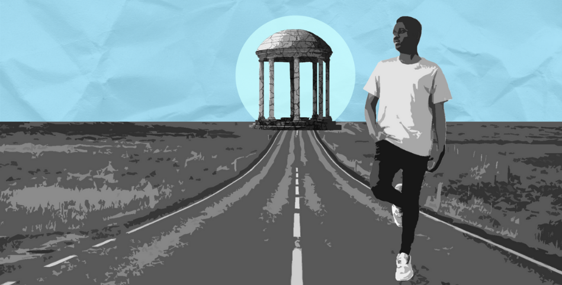
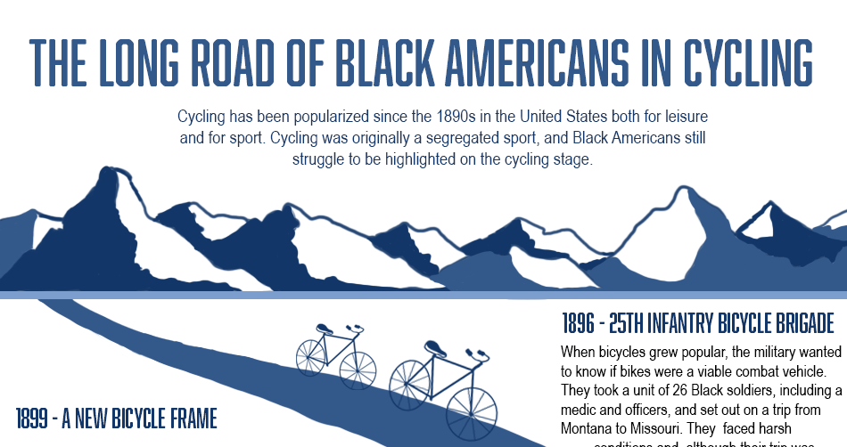
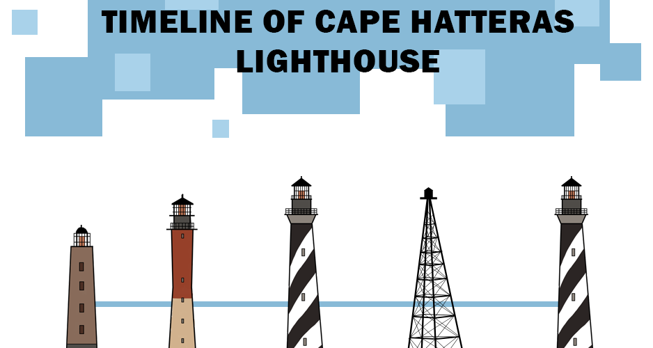
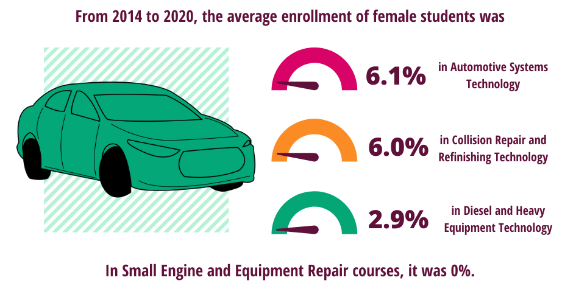

Where Are The Black Men At UNC?
This infographic was created as a companion piece to this article about Black male retention at UNC-Chapel Hill.

The Long Road Of Black Americans In Cycling
This infographic was created as a companion piece to this article about the history of Black cyclists in America.

Timeline of Cape Hatteras
This infographic was created as a companion piece to this article about the restoration of the Cape Hatteras Lighthouse.


This infographic was created as a companion piece to this article about the disparities in women working for the automechanics industry. This has a companion motion graphic I created here for Twitter!